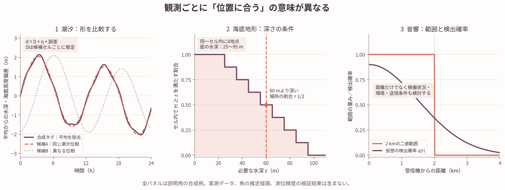
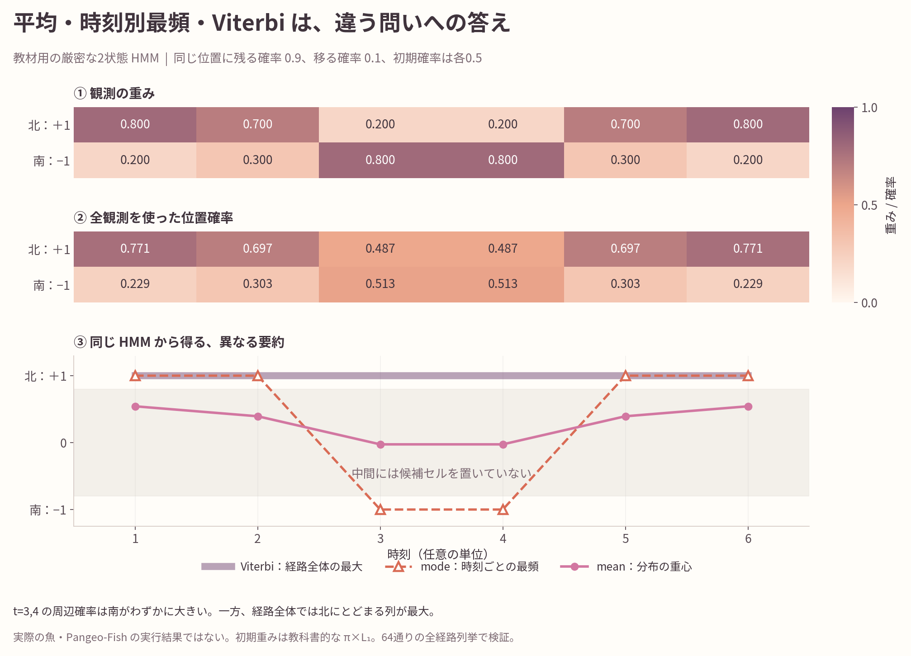

手法を比較し、推定結果を検証する#
比較には二つの問いがあります。「この観測を加えると、どこが候補から外れるか」と「その変更によって、実際の位置をより適切に表せるか」です。前者は推定結果の変化を見る問い、後者は独立な情報を使って確かめる問い（検証）です。
1. 手法の比較表#
情報・枠組み |
主な入力 |
制約するもの |
有効性を左右する条件 |
対象デモ |
|---|---|---|---|---|
水温 |
タグ温度・深度、モデル水温 |
観測した水温と合う位置 |
温度の空間的な変化の大きさ、モデルの誤差、深さの対応 |
Base／Complete |
音響 |
検出記録、受信機の位置・稼働期間 |
検出範囲と合う位置 |
検出距離と確率、稼働状況、時間ビン |
Base／Complete |
海底地形 |
深度の記録、海面の高さ、海底の深さの分布 |
観測した深さが許される場所 |
深度の基準、セル内の地形、潮位の補正 |
Complete |
潮汐・ |
深度、調和定数、UTC |
潮位の波形と合う位置（平均水深は未知として推定） |
静止区間の検出、モデルの誤差、有効なサンプル数 |
Complete の既定 |
潮汐・ |
深度、調和定数、UTC、セルの平均水深 |
水深と予測潮位に合う位置（時間的に相関のある誤差を考慮した尤度（likelihood）） |
静止区間の検出、海底地形の基準面、未調整の誤差の設定値 |
Complete の選択肢 |
HMM |
観測の重み、初期位置、移動のしやすさ |
時間的な位置のつながり |
時間間隔、σ、海域、境界、観測のモデル |
全体の推定の枠組み |
対象デモの欄は、361e9b7 の二つのノートブックのどちらで使うかを示します。Base／Complete。Complete では、潮汐の方式を tide_method（既定は "healpix"、選択肢は "pedersen"）で切り替えます。

図：観測ごとに「位置に合う」の意味が異なります。 左は平均水深を自由に調整した後の潮汐波形の比較、中央は同じセル内の水深の分布から求めた「可能な深さの割合」、右は 2 km の範囲と、仮想の不完全な検出確率の比較です。すべて説明のために作った合成例で、実測データや魚の経路推定の結果ではありません。中央は考え方を単純にした例で、実際の計算そのままではありません。右の滑らかな曲線も、デモの機能や実測のレンジテストの結果を表すものではありません。
2. 観測の重みを掛け合わせる意味#
候補セル \(c\) に対し、温度・音響・海底地形・潮汐の重みをそれぞれ \(L_T,L_A,L_B,L_H\) とすると、Complete ノートブックでは次のように組み合わせます。まず四つの重みを掛け合わせ、次に時刻ごとに、全セルの合計が 1 になるよう正規化します。
回収位置が与えられている場合は、最終時刻の積に回収位置の分布も掛かります。この掛け算は、各観測が互いに独立だという近似、または複数の整合性スコアの積と考えられます。
重みを増やすほど、位置が正しくなるとは限りません。 同じ深度記録から海底地形の項と潮汐の項を作れば、情報の重なりが残ります。pedersen はセルの平均水深（標準偏差 10 m）も使います。healpix はノートブックの設定では平均水深を窓ごとに推定して消すので、潮汐の項から絶対的な深さを除きます。ただし、共通する観測誤差や前処理まで独立になるわけではありません。
一様・ゼロ・欠測は違う#
一様な正の重みは、その情報では候補セルを区別しないという意味です。
ゼロは、その候補を積から消します。
欠測は、データが足りない状態です。掛け合わせの規則によっては、候補セルが消えることがあります。
重みを空間で正規化しただけの地図は、移動のしやすさと初期位置を反映した HMM の事後分布ではありません。図の見出しには、単独の観測の重み、結合した観測の重み、フィルタ分布、平滑化分布のどれかを書いてください。
3. 平均・最頻・Viterbi を比べる#

この図は、一般的な離散 HMM を独立に計算した合成例で、pangeo-fish の実行結果ではありません。上下の二つの候補に重みがあると、座標の平均はその間に来ます。時刻別の最頻位置は、各時刻の分布だけを見て選びます。Viterbi は、移動のしやすさも含めて、全体として最も確からしい一続きの経路を選びます。
平均が候補の外や陸上に出ること、時刻別の最頻位置が飛ぶことは、一本の線だけでは見落としやすいです。実データでは、背景に平滑化分布や、魚が 95% の確率でいるセルの集まりを重ねて示してください。
ノートブックでは、経路の計算の細部がフィルタ・平滑化と Viterbi で少し違います。線の違いは、平均と最頻の違いだけでは説明できないことがあります（詳しくは HMM の章）。
4. A19124 で行う比較の設計#
以下は、自分のデータで比較するときの設計例です。まず、期間、セルの番号、地球の形（WGS84）、海のセル、時間ビンをそろえた共通の領域を作ります。音響や潮汐を加えると利用できる日が変わることがあります。同じデータ範囲で比べられる実験と、範囲が変わる実験を区別してください。
実験 |
使用する情報 |
主な問い |
|---|---|---|
A |
水温 |
温度だけで見分けられる海域はどこか |
B |
水温＋音響 |
受信記録がどの時刻・海域を絞るか |
C |
水温＋音響＋海底地形 |
深度と合わない浅い候補をどう扱うか |
D |
C＋ |
平均水深を弱い情報として含む項を加えると何が変わるか |
E |
C＋ |
潮位の波形の情報を加えると何が変わるか |
Complete ノートブックでは、積に入れる項（水温 pdf、音響 acoustic、海底地形 pdf_bathy、潮汐 pdf_tide）のうち、比較したい手がかりを外して実行します。実際に作られたデータの変数名は、自分で確かめてから外してください。潮汐の項は、他の項と共通のセルと日にそろえられます。
σを固定した比較と、再推定した比較#
まず同じ移動σで比べると、観測を追加した直接の効果が見やすくなります。次に、各組み合わせでσを再推定すると、観測の変更に移動のモデルがどう応じたかが分かります。両方を同じ実験として混ぜないでください。
各条件で、次の項目をそろえて出力します。
単独の観測の重みと、それが効いているセル・時刻。
統合後の重みと、各時刻に正の重みが残っているか。
平滑化分布、平均・最頻・Viterbi の経路。
推定したσと、探索の範囲の端に達していないか。最適化の終了状況は保存されないので、実行時の出力を記録しておきます。複数のσを同時に探す場合は、評価回数の上限（既定は 20）に達していないかも確認します。
魚が 95% の確率でいるセルの集まりの面積、独立なデータに対する予測の良さ、計算時間と最大メモリ。
同じ色の濃さが同じ量を表すよう、地図の凡例と尺度をそろえます。セルの最大値だけで自動的に色分けすると、鋭くなっただけの分布を改善と読み違えやすくなります。
5. 不確実性を数値にする#
確率の大きいセルから順に足していき、合計が 0.95 以上になったところまでのセルの集まり \(C_{0.95,t}\) を作ると、「魚が 95% の確率でいる範囲」を定義できます。
ここで \(p_t(c)\) は、時刻 \(t\) にセル \(c\) に魚がいる確率（平滑化分布）です。セルの面積が等しい全球格子なら、セル数とセル面積から、この範囲の面積を計算できます。ただし、海と陸が混じったセルをどう扱うか、海の面積で報告するのかセルの全面積で報告するのかは、明示してください。確率が離れた二つの海域に分かれるときは、二つの集まりのまま扱います。一つの円にまとめると、確率の低い間の領域まで含んでしまうことがあります。
この範囲が狭いことは、モデルの中で確率が集中していることを示します。実際の位置が決まった割合でこの範囲に入るかどうかは、別に確かめる必要があります。観測のモデルと移動のモデルが正しいと言えるほど、この範囲を事後分布として解釈できます。
6. 独立した位置情報による検証#
音響記録を入力して推定したあと、同じ受信記録への近さだけを評価すると、その観測を再現できたかを調べることになります。独立な評価のためには、検出の一部を取っておく、独立の測位データを使う、位置が分かっている固定タグを使うなど、評価に使う情報を推定から分けます。
正の検出を削除するだけでは、適切に取っておいたことにならない場合があります。 検出を消すと、その時間ビンに他の検出が残らない限り、未検出として扱われ、稼働中の受信機の範囲が除外されます。取っておく受信機・時間帯については、検出と未検出の両方を推定から外し、何も情報がない状態にする必要があります。361e9b7 の pangeo-fish には、受信機と時間帯を指定してこれを行う機能がないため、自分で設計することになります。移動σや観測の幅をデータから選ぶときも、評価に使う側のデータは使わずに決めます。
受信機の検出は、魚が受信機の位置にいたという点の観測ではなく、受信範囲や検出確率を持つ観測です。取っておいた検出については、その予測確率を評価します。可能なら、次の式を使います。
これは、推定に使ったデータ \(y^{\rm train}\) から求めた各セルの確率を使って、取っておいた観測 \(y^{\rm heldout}_t\) がどれだけ起こりやすいかを平均した値です。点の位置が得られる場合は、距離の誤差と、95% の範囲に入る割合を併せて示します。検証データの位置そのものが不確かなら、その誤差も説明してください。観測の仕方が違う検証を、一つの「精度」だけにまとめないでください。
日ごとに空間で正規化した観測の重みを使うスコアは、同じ観測の構成の中で移動パラメータを比べる場合と、観測の構成そのものを変える場合とで、意味が異なります。特に、入力する項が違う実験の最適化スコアだけを並べて「最良の手法」と決めないでください。
7. 感度分析の順番#
最初に、時刻、単位、格子の対応を固定します。次に、次のものを一つずつ変えて結果を見ます。
水温の誤差
differences_std受信範囲
receiver_bufferと未検出の扱いhealpix潮汐のsigma（tide_sigma_m）とmin_samples（pedersenの誤差の設定値は未調整）移動σの探索範囲（
maximum_speed、adjustment_factor）格子のレベル
refinement_level
変える幅は、機器の精度、モデルの残差、レンジテストなどから決めます。便宜的に半分や倍を試した場合は、較正された範囲ではなく、探索であると書いてください。
A19124 の短い例で二つのσが得られたとしても、それだけでは、行動ごとの移動の特徴を見分けられたことにはなりません。期間と遷移の数が多いデータ、複数の個体、独立な行動情報による検証を、研究計画に加えてください。
ここに書いた比較は、自分のデータで試すときの進め方の例です。文献上の実施例は研究の系譜に、実装ごとの設定はパラメータ表にまとめています。